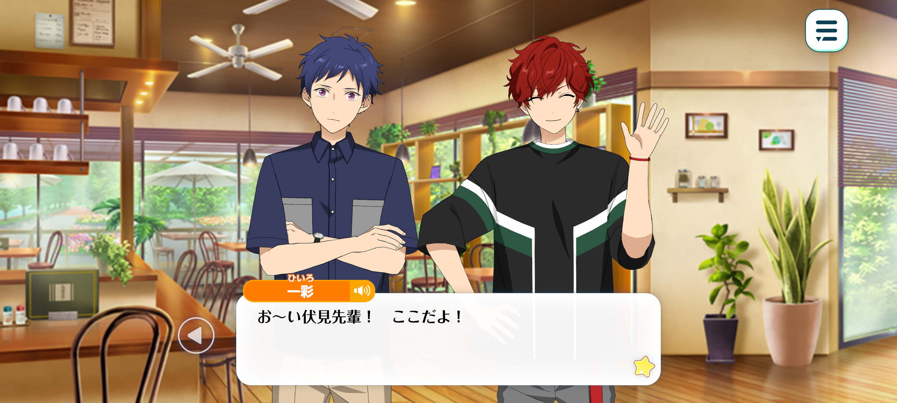
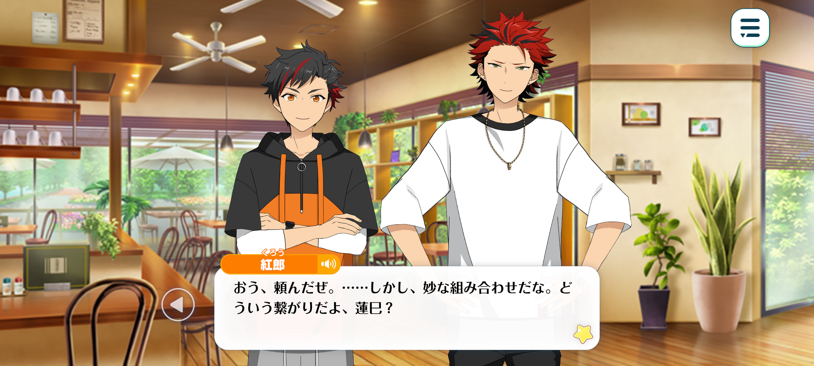
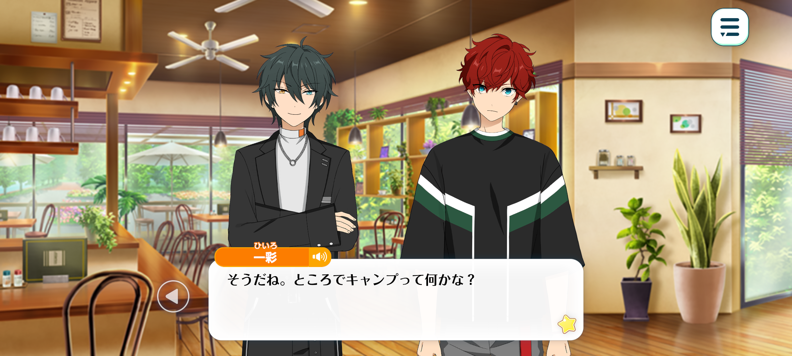

Scout! Keito Lecture
Summer Foam – Chapter 1



Yuzuru: (...I've finished reporting my depature. I should go and join everyone now.)
(Keito-sama and Hiiro-sama have already gone ahead, too... Oh?)
Hiiro: Heeey! Fushimi-senpai! Over here!
Yuzuru: My apologies for keeping you waiting.
Aira: It's alright. Here, have a look at the menu.
Yuzuru: Thank you very much. ...In that case, I'll have the lunch set.
Mika: Ooh, I'll have the same~. Naru-chan said the lunch set’s fried food is really good. I can't wait! ♪
Nn? Hasumi-senpai, where're ya goin'?
Keito: I'll only be a moment. I'll be right back.
Aira: He's heading towards the entrance. I wonder who he's talking to... Kiryu-senpai?
Hiiro: Buchou's there too. Look, they're coming back together.
Keito: Kiryu and Nagumo have come here to eat as well, but it seems they've run into a problem. There's no seating left.
Fortunately, this table is rather spacious, so there's plenty of room for everyone. Would you mind if we shared a table?
Hiiro: I see. You're all very welcome!
Everyone, let's give them a round of applause! That's how you welcome someone!

Tetora: N-no, you don't have to do that! That's embarrassing!
I'll go and grab a couple of chairs so we can all sit together and chat, Taishou!
Kuro: Yeah, please. ...Anyway, this is quite an unusual bunch. What brings you all together, Hasumi?
Keito: We're all members of the Keito Lecture circle.
Kuro: Keito Lecture...? Ohh, right. Ain't that your study circle, Danna?
Keito: That's right. Would you care to join us?
Kuro: No chance. I'm no good at studying.
Tetora: Taishou~! I've got us some chairs! I went ahead and ordered while I was up, too!
Kuro: Cheers, Nagumo. Right, then...
Hiiro: Our circle isn't just about studying, Kiryu-senpai. Today, we learnt about traffic rules.
Tetora: Traffic rules? Like putting your hand up when you're crossing the road?
How nostalgic! I remember learning how to cross the road safely back in primary school.
Kuro: Yeah, same here. So that's what you were learning about? You'd think you'd know that stuff by now.
Keito: You’d be surprised by how often people forget simple things like that. For example, do you remember that when there’s no pavement, you’re supposed to walk on the right-hand side of the road?
I started this lesson intending to refresh everyone's memories. It seems Amagi has learnt something from it, so I'd say it was worth the effort.
Watching him reminds me of how Kanzaki used to be. I admire his earnestness and single-minded determination, but there are times when his lack of common sense is rather concerning.
His eagerness to improve himself is infectious, and it makes me want to work harder myself. However, I can't help worrying that his lack of common sense might get him into unexpected trouble.
Tetora: Ahh... I think I know what Hasumi-senpai means.
Whether it's in the Karate Club or just his general way of thinking, he sometimes does some pretty unusual things. He always manages to catch me off guard.
Kuro: It ain't causin' any trouble for now, but it's pretty interestin' to watch from the sidelines. Do you think you can handle gettin’ this guy up to speed?
Keito: Well... I'm doing what I can, but there are some things you simply can't learn in a classroom.
How can we properly gauge how well Amagi has adapted to society? Perhaps some practical training would be in order...?
Kuro: Practical training, huh...? How about takin' the whole Keito Lecture group on a trip?
I'm part of the Overnight Outdoors Party, and we go to all sorts of places to get away from modern society. Though, I gotta say, gettin' everyone there was a real pain the first time.
After a while, you start gettin' used to each other's habits. Once everyone's in sync, it's a lotta fun.
You should take your group somewhere far away, too. Spend a couple of days and a night livin' together, and I'm sure you'll learn a thing or two about each other.
Keito: Hmm... In that case, how about meditating beneath a waterfall in the mountains?
Kuro: Whoa, hold your horses. These guys ain't Kanzaki. That'd be a bit much for your average person.
Keito: I can't think of anything else. I rarely venture outside my hometown, so I'm not particularly familiar with these so-called "places to visit".
Kuro: Oh, right. Well, how about goin' camping?
There's a campsite I've been to a few times with the Overnight Outdoors Party. It's aimed at beginners, so they've got all the facilities and services you could need.
There's always someone at the reception office, so if you run into any problems, you can just go and ask them. You can rent pretty much everything you need, too, from tents to cooking equipment.
There's a shop nearby where you can buy food and supplies, so you can turn up empty-handed and still be just fine.
Keito: Hmm. Please, tell me more.

Mika: ...Campin' with everyone sounds pretty excitin'.
Hiiro: I think so too! By the way, what’s camping?
Aira: Huh?! Have you been listening this whole time without even knowing what we're talking about?!
Hiiro: Yes. It would be rude to interrupt someone halfway through their conversation. Please, I'd like you to explain what camping is.
Aira: Umm, how should I put it...? It's kinda like roughing it, I guess?
Yuzuru: I believe you could also describe it as "living out in the open". It's an opportunity to enjoy the simplicity of life in a tent made of fabric.
Hiiro: I see! That makes sense when you put it that way. Hunting is a tradition in my hometown, you see. So, will we be going hunting, too?
Fufu, I'm looking forward to it. I’m usually the one being taught, so it looks like I might finally be able to be of some use…♪